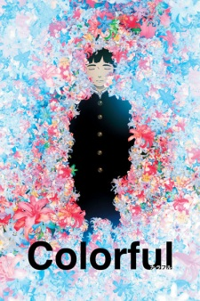

The breakfast Club
Fecha de estreno: 15 de febrero de 1985
Director: John Hughes

Colorful
Fecha de estreno: 21 de agosto de 2010
Director: Keiichi Hara

10 Things I Hate About You
Fecha de estreno: 31 de marzo de 1999
Director: Gil Junger